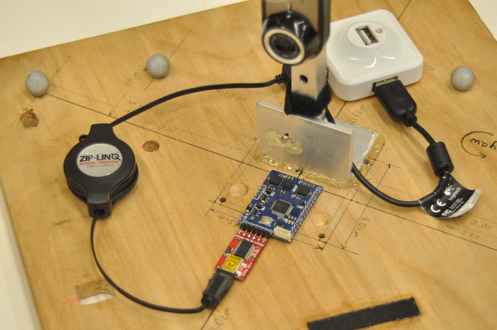

ECE 276A · SENSOR FUSION
IMU Orientation Tracking & Panorama Reconstruction
Estimate camera orientation from inertial data, then use the pose sequence to stitch a panorama.

The project
Gyroscope integration provides a motion model, while accelerometer gravity supplies an observation cue. Optimization on unit quaternions refines the orientation trajectory before image projection.
How it works
- Integrate gyroscope readings to build an initial orientation trajectory.
- Use accelerometer observations and projected gradient descent to reduce orientation error.
- Project RGB frames onto a cylindrical panorama using the estimated camera poses.
See the evidence

